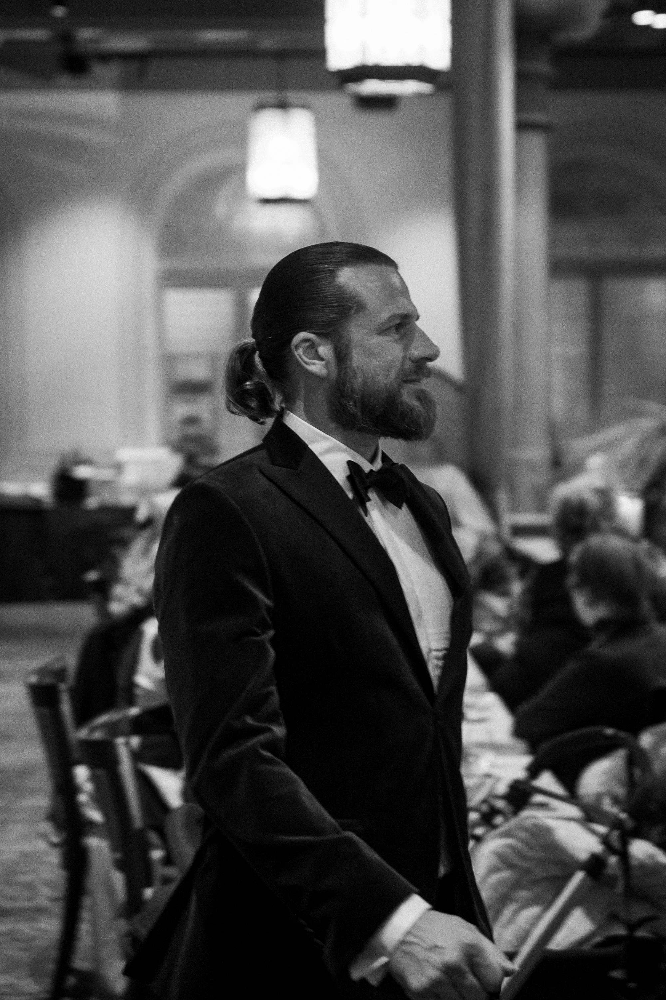
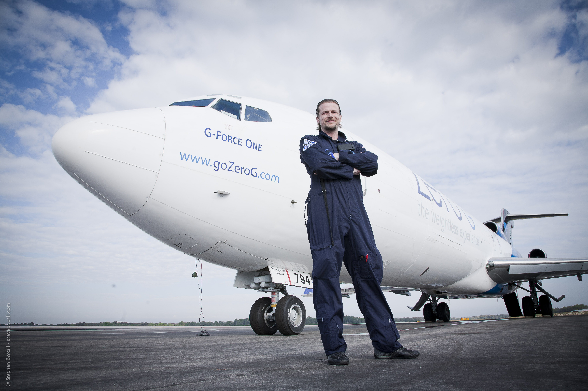
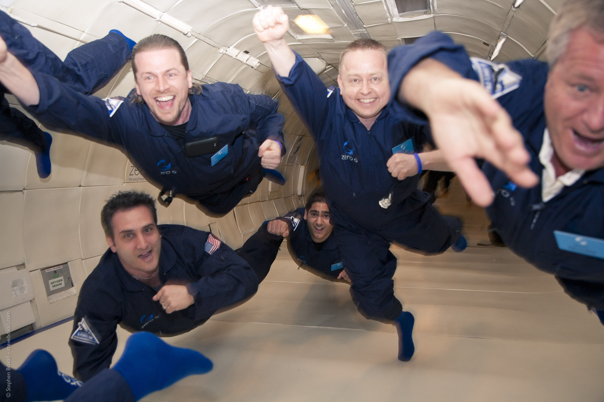
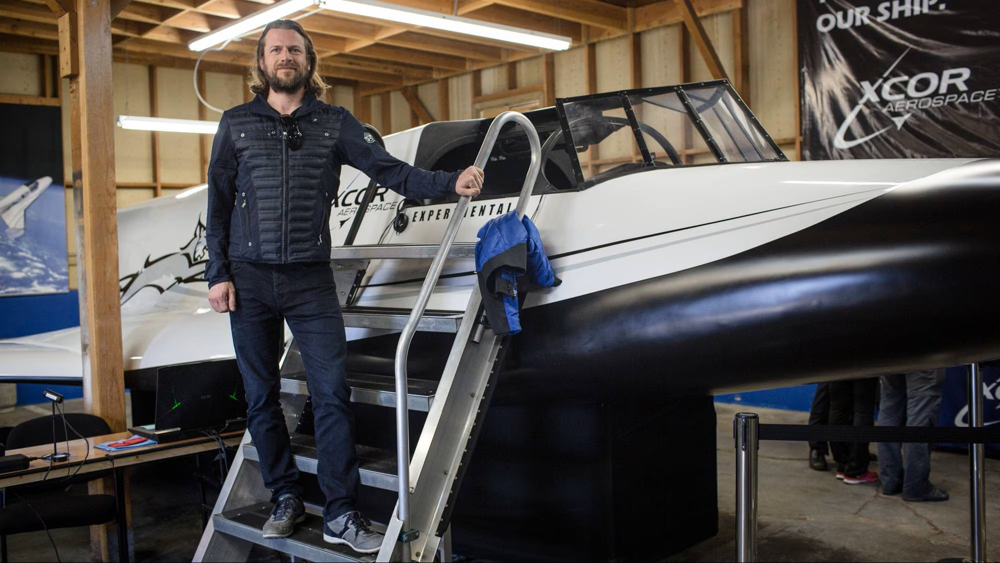
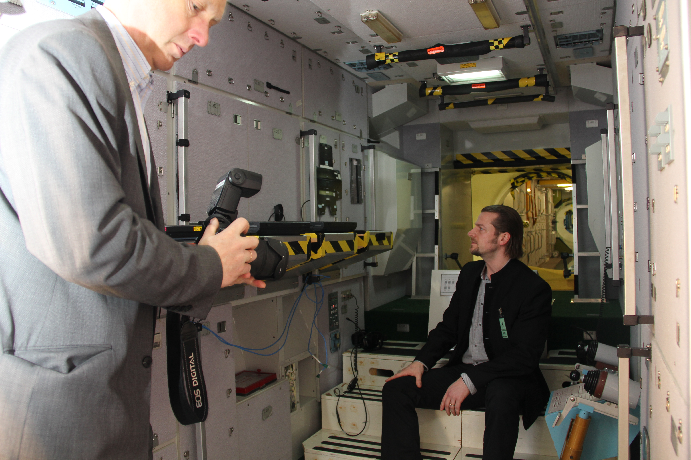
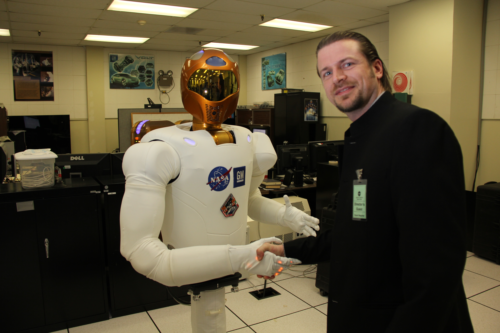
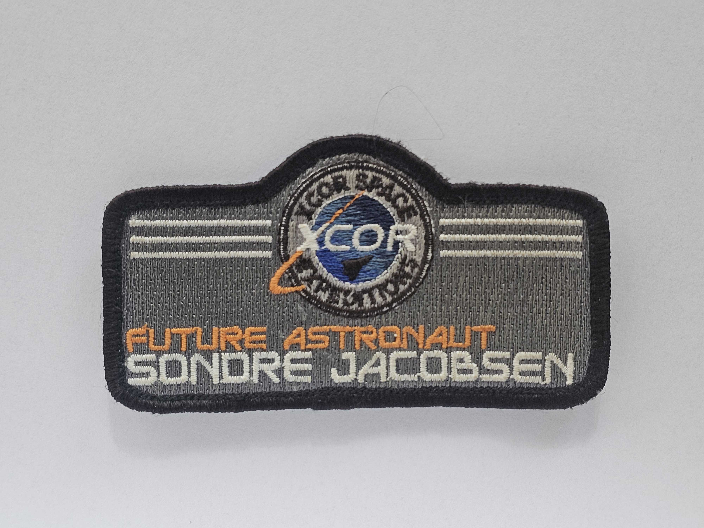
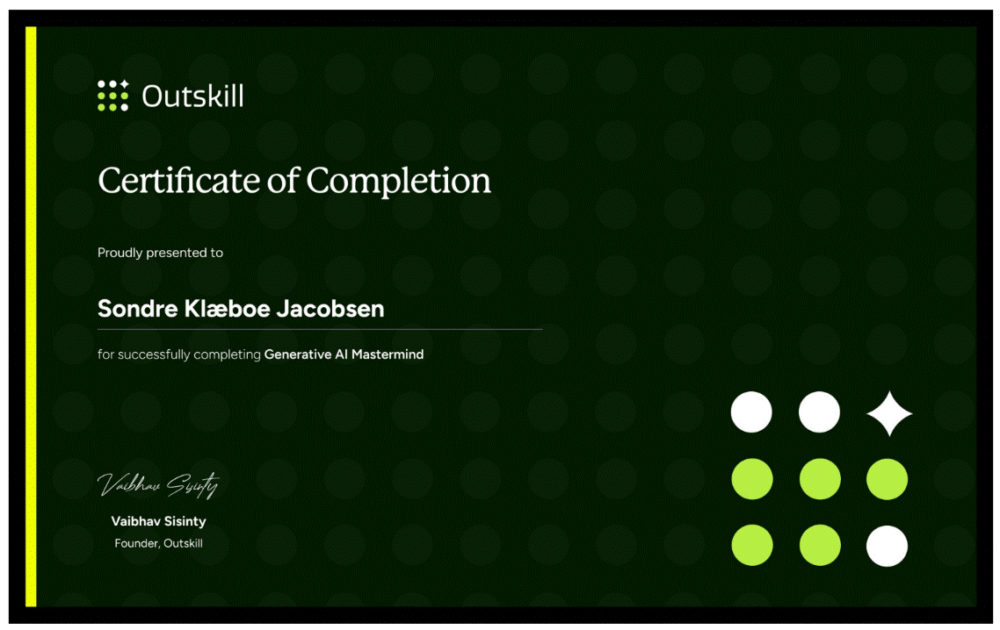
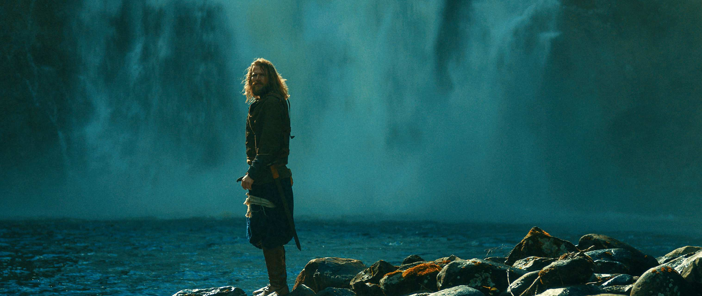

"I don't have dreams. I only have plans."
Da jeg som barn tenkte på verdensrommet, var det aldri en drøm. Det var en plan, og den har jeg fulgt siden. When I thought about space as a child, it was never a dream. It was a plan, and I have followed it ever since.Jeg vokste opp på Helgeland i Nord-Norge, men ble tidlig en verdensborger. Min fars arbeid for Det Norske Veritas tok familien til Nederland, Australia og Sør-Korea i barneårene. I Norge var det Sandnessjøen som var hjemme.
Nysgjerrigheten startet tidlig. Fem år gammel spurte jeg faren min hvor stort universet var. Han svarte at det var uendelig, og at det utvidet seg med lysets hastighet. Jeg klarte ikke å forestille meg det, men jeg skjønte at det var noe jeg måtte finne ut av. Det spørsmålet har drevet meg siden.
I 1995 flyttet jeg til Trondheim for å ta en sivilingeniørgrad i marin teknikk ved NTNU, med fordypning innen både olje og gass og oppdrettsteknologi. Siden har jeg bygget en karriere i skjæringspunktet mellom teknologi, forretning og forskning, og holdt fast ved drømmen om verdensrommet hele veien.
I grew up on Helgeland in Northern Norway, but became a citizen of the world early on. My father's work for Det Norske Veritas took the family to the Netherlands, Australia and South Korea during my childhood. In Norway, Sandnessjøen was home.
My curiosity started early. At five years old I asked my father how big the universe was. He answered that it was infinite, and that it was expanding at the speed of light. I could not picture it, but I understood that this was something I had to figure out. That question has driven me ever since.
In 1995 I moved to Trondheim to earn a master's degree in marine technology at NTNU, specialising in both oil and gas and aquaculture technology. Since then I have built a career at the intersection of technology, business and research, holding on to the dream of space the whole way.

Siden Juri Gagarin dro opp i 1961, har færre enn 700 mennesker vært i verdensrommet. Norge har foreløpig ingen. Det har jeg tenkt å gjøre noe med.
Veien har vært lang og full av omveier. Allerede i 1998 var jeg blant de aller første som sikret seg billett hos Virgin Galactic. Senere kjøpte jeg plass på XCORs romfly Lynx Mark II, og besøkte fabrikken i Mojaveørkenen, prøvesatte fartøyet og snakket med astronauter som hadde tilbrakt nær tusen timer i bane rundt jorden. Som en del av treningen har jeg gjennomført og fått sertifisert vektløshet hos Zero Gravity Corporation, og fløyet som copilot i jagerfly for å kjenne romreisens G-krefter på kroppen. Ingen av selskapene nådde helt frem, men målet sto fast.
Since Yuri Gagarin went up in 1961, fewer than 700 people have been to space. Norway has none yet. I intend to change that.
The road has been long and full of detours. As early as 1998 I was among the very first to secure a ticket with Virgin Galactic. Later I bought a seat on XCOR's spaceplane Lynx Mark II, visited the factory in the Mojave Desert, sat in the craft and spoke with astronauts who had spent nearly a thousand hours in orbit. As part of my training I have completed and been certified in weightlessness with Zero Gravity Corporation, and flown as co-pilot in a fighter jet to feel the G-forces of spaceflight on my own body. Neither company made it all the way, but the goal held firm.





I 2021 ble jeg tatt ut som én av to nordmenn til sluttfasen i Den europeiske romorganisasjonens (ESA) astronautopptak, av over 23 000 søkere fra hele verden. Jeg gikk ikke helt til topps, og Norge fikk ingen astronaut denne gangen. Men det endret ikke planen.
Jeg hadde aldri tenkt å vente på at noen skulle velge meg. Planen har alltid vært å betale for reisen selv. Det er en av grunnene til at jeg jobber slik jeg gjør i oppstartsbransjen: jeg bygger selskaper mot en exit som kan ta meg ut dit. Jeg har i utgangspunktet ingen drømmer, bare planer. Når jeg vil oppnå noe, legger jeg alltid en plan.
In 2021 I was selected as one of two Norwegians for the final stage of the European Space Agency's (ESA) astronaut selection, out of more than 23,000 applicants worldwide. I did not make it all the way to the top, and Norway got no astronaut this time. But it did not change the plan.
I never intended to wait for someone to choose me. The plan has always been to pay for the journey myself. That is one of the reasons I work the way I do in the startup world: I build companies toward an exit that can take me out there. I don't really have dreams, only plans. When I want to achieve something, I always make a plan.


Siden 2004 har jeg jobbet med technology transfer, helt fra oppstarten av NTNU Technology Transfer, der jeg var med fra begynnelsen. Spisskompetansen min er å se hvilke ideer som faktisk er gode, og å bygge vei fra forskning til marked. Jeg har bred og dyp erfaring med patentering, avanserte patentstrategier, freedom to operate og kommersielle strategier, med et særlig fokus på olje og gass og oppdrettsteknologi.
Jeg er daglig leder i InnSep, som har utviklet en separasjonsteknologi som skiller væske fra gass på en langt enklere måte enn før, en idé så enkel at det er vanskelig å tro ingen tenkte på den tidligere. Jeg leder også Lynx Kitchen, en spinout fra InnSep der teknologien er tilpasset kjøkkenventilasjon. Her har vi inngått partnerskap med Mælen Blikk og Ventilasjon AS, som har enerett på produksjon og salg i Norge, og målet er å ta løsningen til resten av verden.
Jeg jobber også deltid i innovasjonsgruppen i Aider AS, der vi hjelper selskaper, store og små, med søknader til Enova og Forskningsrådet, patentering, strategisk oppbygging, kommersialisering og management for hire.
Jeg er fascinert av kunstig intelligens og tar jevnlig kurs for å styrke kunnskapen og erfaringen min, blant annet Outskills sertifisering som Generative AI-generalist. Jeg bruker AI i stadig større grad for å få mer ut av erfaringen jeg har bygget opp gjennom årene.
Tidligere har jeg blant annet vært medgründer av teknologioverføringskontoret ved NTNU, jobbet som innovasjonsrådgiver og senior prosjektleder i en rekke teknologiselskaper, og undervist i mekanikk og innovasjon ved NTNU.
Since 2004 I have worked in technology transfer, right from the founding of NTNU Technology Transfer, where I was involved from the start. My core strength is seeing which ideas are genuinely good, and building the path from research to market. I have broad and deep experience with patenting, advanced patent strategies, freedom to operate and commercial strategy, with a particular focus on oil and gas and aquaculture technology.
I am CEO of InnSep, which has developed a separation technology that separates liquid from gas in a far simpler way than before, an idea so simple it is hard to believe no one thought of it earlier. I also lead Lynx Kitchen, a spinout from InnSep where the technology is adapted for kitchen ventilation. Here we have entered a partnership with Mælen Blikk og Ventilasjon AS, who hold exclusive rights to produce and sell it in Norway, and the goal is to take the solution to the rest of the world.
I also work part-time in the innovation group at Aider AS, where we help companies, large and small, with applications to Enova and the Research Council of Norway, patenting, strategic development, commercialisation and management for hire.
I am fascinated by artificial intelligence and regularly take courses to strengthen my knowledge and experience, among them Outskill's certification as a Generative AI Generalist. I use AI to an increasing degree to get more out of the experience I have built up over the years.
Earlier I have, among other things, co-founded the technology transfer office at NTNU, worked as an innovation advisor and senior project manager in a range of technology companies, and taught mechanics and innovation at NTNU.
Ved siden av teknologien har jeg en fot i filmverdenen. Sammen med regissør Ole Fredrik Wannebo stiftet jeg produksjonsselskapet Ragnarok Film, med ambisjon om å skildre vikingtiden og den norrøne mytologien så historisk og mytologisk korrekt som mulig, langt unna Hollywoods versjon.
Alongside the technology, I have a foot in the world of film. Together with director Ole Fredrik Wannebo I founded the production company Ragnarok Film, with the ambition of portraying the viking age and Norse mythology as historically and mythologically accurately as possible, far from the Hollywood version.

Jeg spilte og produserte hovedrollen i kortfilmen «Ragnarok», som ble vist på filmfestivaler i Chicago, Italia og Tokyo før den fikk premiere på YouTube. Jeg medvirket også i musikkvideoen til Wardrunas «Lyfjaberg», som med over 80 millioner visninger er blitt en av Norges mest sette musikkvideoer. Jeg har spilt i «Birkebeinerne» og hatt rollen som Rane Vidvandre i NRK-serien «I Olavs fotspor».
Vi medvirker fortsatt i film og har flere spennende prosjekter på horisonten. Vi har også skapt Viking Experience, som var først ute med å la folk med en skuespillerdrøm oppleve å være hovedperson i sin egen film. Vi stiller med skuespilleropplæring, gir tre ganger så lang opptakstid som normalt og utvikler et manus tilpasset den enkelte. To filmer lanseres nå, og vi har tidligere laget film finansiert gjennom Kickstarter. Profilen min finnes på IMDB.
I acted in and produced the lead role in the short film "Ragnarok", which screened at film festivals in Chicago, Italy and Tokyo before premiering on YouTube. I also appeared in the music video for Wardruna's "Lyfjaberg", which with over 80 million views has become one of Norway's most-watched music videos. I have acted in "The Last King" (Birkebeinerne) and played the role of Rane Vidvandre in the NRK series "I Olavs fotspor".
We are still active in film and have several exciting projects on the horizon. We have also created Viking Experience, the first of its kind to let people with an acting dream experience being the lead in their own film. We provide acting training, give three times the normal shooting time, and develop a script tailored to the individual. Two films are launching now, and we have previously made a film financed through Kickstarter. My profile is on IMDB.
Reisen min har vært dekket av norske medier gjennom flere tiår. NRK Viten fulgte meg til Mojaveørkenen i den store reportasjen «Veien til verdensrommet». Dagens Næringsliv skrev om samarbeidet mellom norsk industri og NASA. Adresseavisen fortalte historien da jeg ble tatt ut til ESAs astronautopptak. Helgelands Blad har fulgt meg fra oppfinner-NM til romdrakt. Og Universitetsavisa lot meg gå vitenskapelig til verks for å brygge den perfekte kaffekoppen.
My journey has been covered by Norwegian media across several decades. NRK Viten followed me to the Mojave Desert in the feature "The Road to Space". Dagens Næringsliv wrote about the collaboration between Norwegian industry and NASA. Adresseavisen told the story when I was selected for ESA's astronaut process. Helgelands Blad has followed me from the national inventor's prize to the spacesuit. And Universitetsavisa let me take a scientific approach to brewing the perfect cup of coffee.
Vil du ta kontakt? Du finner meg her:Want to get in touch? You can find me here: